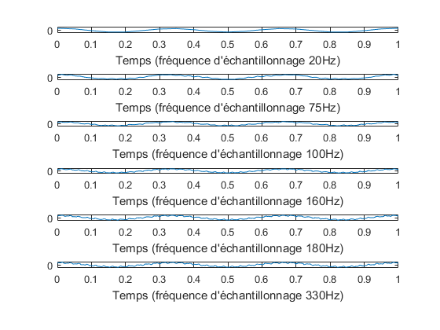

Exercice 2 : Échantillonage
Contents
Question 1
Y(t)=2sin(16 * pi * t) + 13cos(6 * pi * t) - 3cos(80 * pi * t) Fréquences présentes dans ce signal : Le signal est déjà écrit comme une somme de sinusoïdes. On peut donc lire directement les fréquences présentes (en divisant par 2) : f1 = 3Hz, f2 = 40Hz et f3 = 82.5Hz.
Question 2
Abscisses :
t0 = 0:(1/20):1; t1 = 0:(1/75):1; t2 = 0:(1/100):1; t3 = 0:(1/160):1; t4 = 0:(1/180):1; t5 = 0:(1/330):1;
Ordonnées :
y0 = 2*sin(165*pi*t0)+13*cos(6*pi*t0)-3*cos(80*pi*t0); y1 = 2*sin(165*pi*t1)+13*cos(6*pi*t1)-3*cos(80*pi*t1); y2 = 2*sin(165*pi*t2)+13*cos(6*pi*t2)-3*cos(80*pi*t2); y3 = 2*sin(165*pi*t3)+13*cos(6*pi*t3)-3*cos(80*pi*t3); y4 = 2*sin(165*pi*t4)+13*cos(6*pi*t4)-3*cos(80*pi*t4); y5 = 2*sin(165*pi*t5)+13*cos(6*pi*t5)-3*cos(80*pi*t5);
Tracé :
figure(2) subplot(6,1,1) plot(t0,y0) xlabel("Temps (fréquence d'échantillonnage 20Hz)") subplot(6,1,2) plot(t1,y1) xlabel("Temps (fréquence d'échantillonnage 75Hz)") subplot(6,1,3) plot(t2,y2) xlabel("Temps (fréquence d'échantillonnage 100Hz)") subplot(6,1,4) plot(t3,y3) xlabel("Temps (fréquence d'échantillonnage 160Hz)") subplot(6,1,5) plot(t4,y4) xlabel("Temps (fréquence d'échantillonnage 180Hz)") subplot(6,1,6) plot(t5,y5) xlabel("Temps (fréquence d'échantillonnage 330Hz)")
Question 3
Plus la fréquence d'échantillonnage est élevée, plus le signal est détaillé et régulier.
Question 4
Le théorème de Nyquist-Shannon nous dit que la fréquence d'échantillonnage minimale qui permet de reconstituer un signal est le double de la fréquence maximale du signal, soit 82.5Hz. Les fréquences qui répondent à ce critère sont 180Hz et 330Hz, 330Hz est donc la fréquence d'échantillonnage optimale.